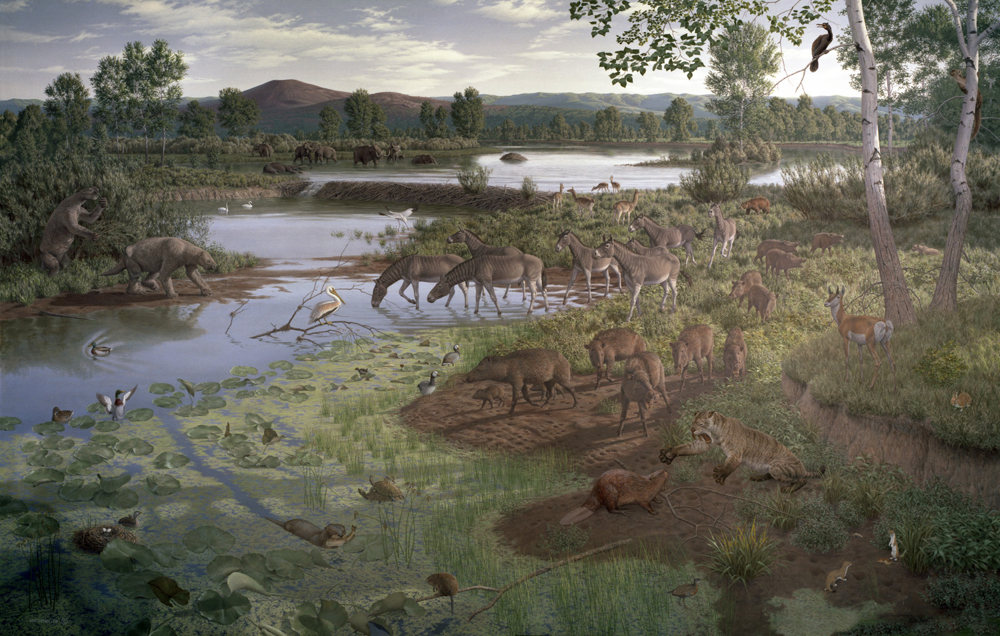

The Pliocene, 5.3 to 2.6 million years ago,* was a time of global cooling after the warmer Miocene. The cooling and drying of the global environment may have contributed to the enormous spread of grasslands and savannas during this time. The change in vegetation undoubtedly was a major factor in the rise of long-legged grazers who came to live in these areas.